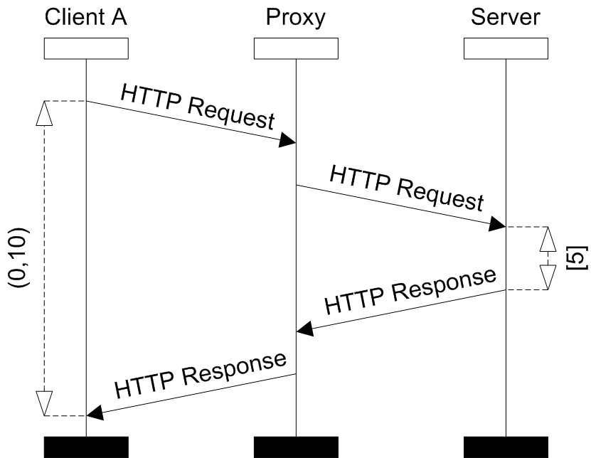
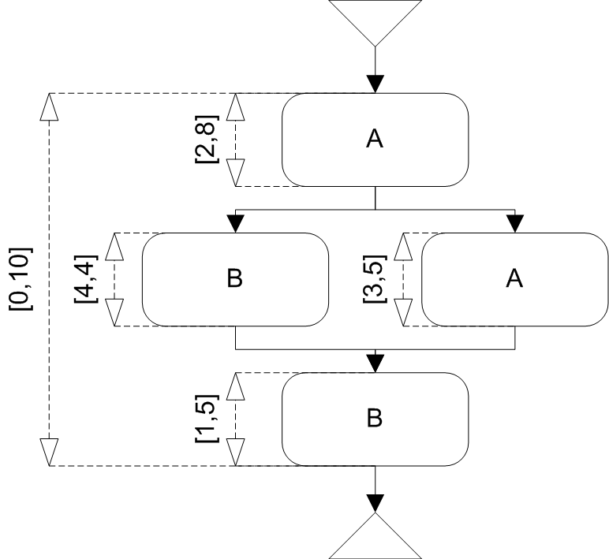
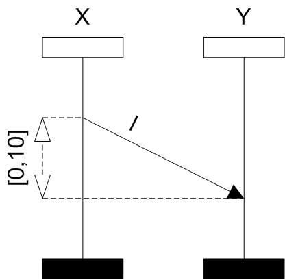
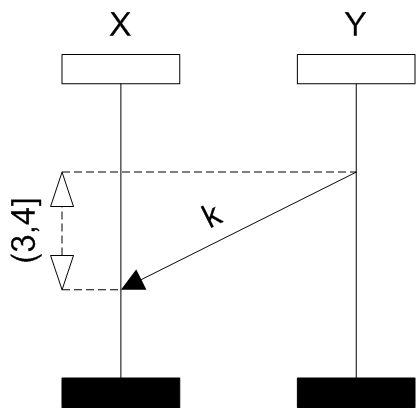
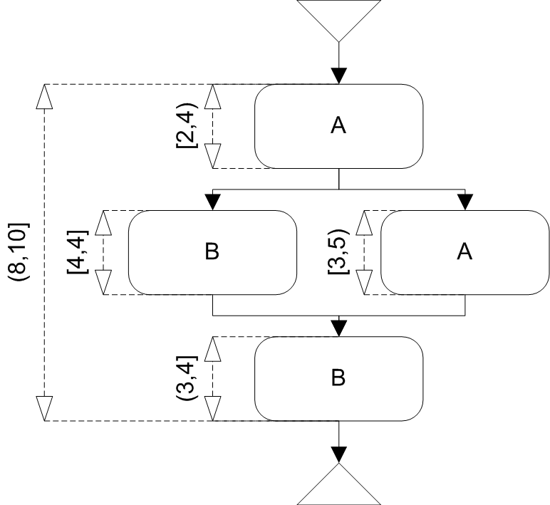

Tighten Time
The purpose of the tighten time algorithm is to shorten interval sets of time constraints to minimal possible values. It deletes every value of time constraints which cannot be used due to other more restrictive time constraints.
Basic MSC
After the tighten time algorithm, every constraint contains only values in interval sets for which exists valid time assignment.
The time assignment for BMSC (resp. HMSC path) is an assignment of time value to every event such that it satisfies all constraints in given BMSC (resp. HMSC path). I.e. for every constraint which restricts two events, the difference of values assigned by the assignment to these events must be included in the interval set of this constraint.
An example of the tighten time algorithm on a BMSC is shown on the next picture. The time constraint which contains value (0,10) has to be changed to [5,10) because the communication turnover takes at least 5 time units.
-
- 
- Original BMSC
-
-

- Tightened BMSC
-
High-level MSC
After the tighten time algorithm, every constraint contains only values in interval sets for which exists valid time assignment for some path from the start node to an end node.
An example of the tighten time algorithm on a HMSC is shown on the next picture. The constraints change because of the following reasons:
- the constraint on the node B changes because of the Original BMSC B
- the lower bound of the constraint between the nodes A and B changes to 8 because the lower bound of the first path is 9 and the lower bound of the second path is 8
- the Original BMSC A tightens to the Tightened BMSC A because of the both constraints on the nodes A (the upper bound is derived from the constraint containing [3,5] and the lower bound from the constraint containing [2,8])
- the upper bound of the HMSC constraint originally containing [3,5] is tightened to 5 (not included) because the candidates for the upper bound is the lower value from upper bound 5 (from the original constraint) and the value derived from constraints containing, (8,10], (3,4] and [2,8]. We have to compute the upper bound candidate from the values of the time intervals. Since we can stay at least 3 (not included) time units in the first node A and at least 2 time units in the node B and we can stay at most 10 time units in the whole execution we get that we can stay at most 10 - 3 - 2 = 5 (not included) time units in second node A . Thus the original constraint (with the value [3,5]) will contain [3,5) after the execution of the tightening algorithm.
- the upper bound of the constraint containing originally [2,8] tightens to 4 (not included), because the possible upper bound for this constraint derived from the first path is 10 - 4 - 3 = 3 (not included) and from the second path it is 10 - 3 - 3 = 4 (not included).
Before:
-
- 
- Original HMSC
-
- 
- Original BMSC A
-
- 
- Original BMSC B
After:
-
- 
- Tightened HMSC
-
- Tightened BMSC A
-
- Tightened BMSC B